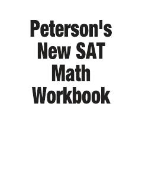

SNYangi SAT matematika imtihoniga tayyorgarlik ko'rish uchun amaliy qo'llanma.
Ushbu qo'llanma yangi SAT imtihonining matematika qismiga tayyorlanish uchun mo'ljallangan bo'lib, kasrlar, foizlar, algebra va geometriya kabi mavzularni qamrab oladi. Kitobda diagnostik testlar, amaliy mashqlar va ularning yechimlari keltirilgan.